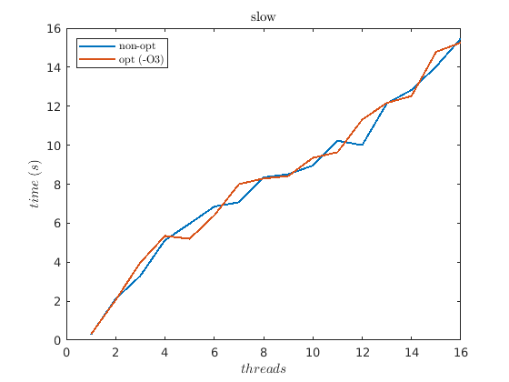
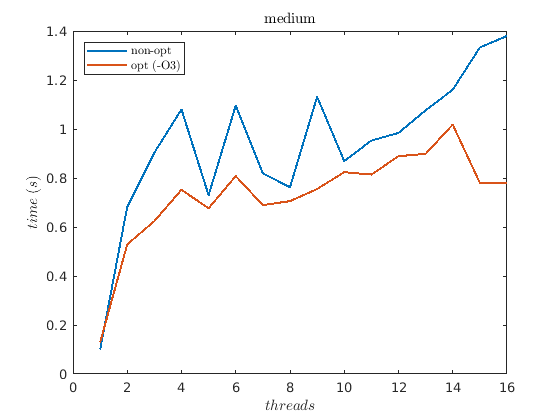
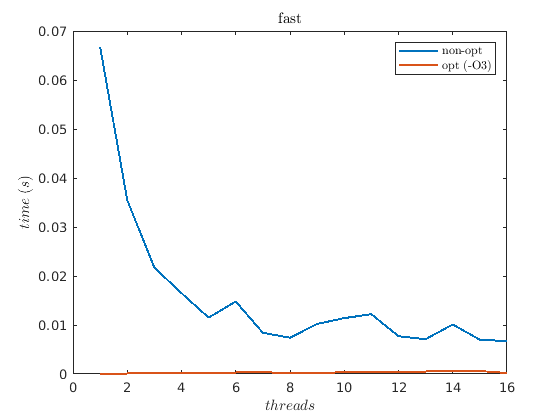

Contents
close all clear all clc set(0, 'defaultTextInterpreter', 'latex');
ParProg assignment 01
2. measurements
n = 1:16; % times, no optimization flag cores = [ 1, 2, 3, 4, 5, 6, 7, 8, 9, 10, 11, 12, 13, 14, 15, 16]; slow_non_opt = [0.2818, 2.1125, 3.2945, 5.1269, 5.9730, 6.8502, 7.0715, 8.3471, 8.5063, 8.9544, 10.2263, 9.9996, 12.1382, 12.8303, 14.0331, 15.4692]; medium_non_opt = [0.0997, 0.6820, 0.9032, 1.0800, 0.7295, 1.0954, 0.8190, 0.7619, 1.1317, 0.8689, 0.9527, 0.9840, 1.0757, 1.1602, 1.3325, 1.3797]; fast_non_opt = [0.0668, 0.0355, 0.0217, 0.0165, 0.0115, 0.0148, 0.0084, 0.0074, 0.0102, 0.0114, 0.0122, 0.0077, 0.0071, 0.0101, 0.0070, 0.0067]; % times, optimization flag '-O3' slow_opt = [0.2972, 2.0570, 3.9755, 5.3461, 5.1967, 6.3965, 7.9986, 8.2906, 8.4153, 9.3508, 9.6378, 11.3053, 12.1688, 12.5177, 14.7877, 15.2613]; medium_opt = [0.1286, 0.5287, 0.6239, 0.7517, 0.6763, 0.8077, 0.6891, 0.7055, 0.7548, 0.8237, 0.8138, 0.8888, 0.8984, 1.0178, 0.7800, 0.7784]; fast_opt = [0.0000, 0.0001, 0.0002, 0.0001, 0.0001, 0.0003, 0.0004, 0.0001, 0.0001, 0.0004, 0.0004, 0.0003, 0.0005, 0.0005, 0.0006, 0.0002]; figure(1) plot(n, slow_non_opt, 'DisplayName', 'non-opt', 'Linewidth', 1.5); hold on plot(n, slow_opt, 'DisplayName', 'opt (-O3)', 'Linewidth', 1.5); title('slow') xlabel('$threads$'); ylabel('$time$ $(s)$') hold off leg = legend(); set(leg, 'Interpreter', 'latex','Location','northwest'); figure(2) plot(n, medium_non_opt, 'DisplayName', 'non-opt', 'Linewidth', 1.5); hold on plot(n, medium_opt, 'DisplayName', 'opt (-O3)', 'Linewidth', 1.5); title('medium') xlabel('$threads$'); ylabel('$time$ $(s)$') hold off leg = legend(); set(leg, 'Interpreter', 'latex','Location','northwest'); figure(3) plot(n, fast_non_opt, 'DisplayName', 'non-opt', 'Linewidth', 1.5); hold on plot(n, fast_opt, 'DisplayName', 'opt (-O3)', 'Linewidth', 1.5); title('fast') xlabel('$threads$'); ylabel('$time$ $(s)$') hold off leg = legend(); set(leg, 'Interpreter', 'latex');  